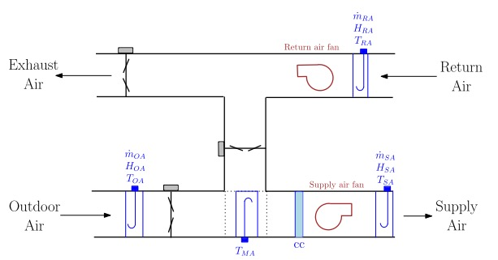
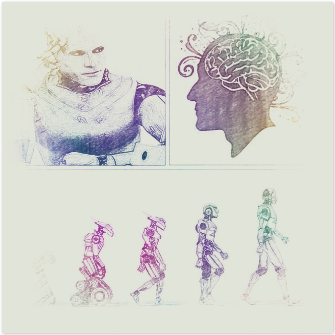
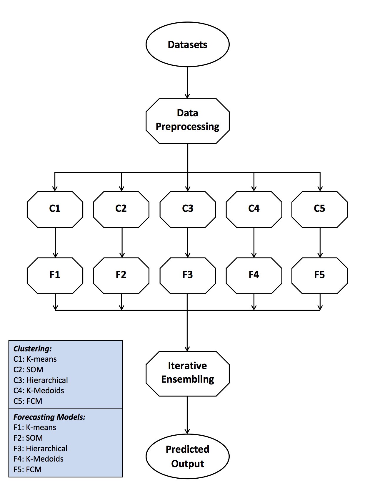

About Me
I am a PhD student affiliated with the MONDEGO group at the University of California, Irvine. My advisor is Prof. Cristina Lopes. I received my M.Sc in Computing and Information Science from Masdar Institute of Science and Technology in Abu Dhabi, and B. Eng in Software Engineering from Northwestern Polytechnical University in Xi'an.
What's New?
Tweets by @wenshenResearch
I am passionate about investigating how to influence (biological and artificial) agents' behavior for desired outcomes. My ultimate goal is to develop machines that are capable of effectively reshaping agents' behavior through information design, mechanism design, institution design and beyond. My research interests lie in the intersection of distributed artificial intelligence, human-machine interaction, interactive machine learning, algorithmic economics, cognitive psychology, and decision theory. My current work focuses on: (1) information/mechanism/institution design to induce cooperation among agents with different interests for socailly desired objectives in online platforms (e.g., ridesharing, crowdfunding, and crowdsourcing); (2) learning from revealed preferences to reconstruct agents' decision-making process; (3) enabling decision makers to evaluate their policies through design and development of scalable simulation frameworks.
I have actively participated in the following research projects:
- Automated Incentive Design: From Mechanisms to Information Structures
Collaborators: Cristina Lopes and Jacob Crandall - Bandits and Agents
- Managing Autonomous Mobility on Demand Systems
Paper: IJCAI'16, PRIMA'15
Collaborators: Cristina Lopes and Jacob Crandall - Monitoring and Predictive Maintenance of Buildings and Building Systems
Paper: Neurocomputing 2016, Energy Build. 2015, 2014
Collaborators: Afshin Afshari and Ke Yan
 - Regulating Highly Automated Machine Ecologies
Paper: Thesis
Collaborators: Jacob Crandall and Iyad Rahwan
 - Electricity Demand Time Series Forecasting
Paper: ACM eEnergy'13
Collaborators: Vahan Babushkin, Zeyar Aung, and Wei Lee Woon


Publications
Online Fault Detection Methods for Chillers Combining Extended Kalman Filter and Recursive One-class SVM.
Neurocomputing (In press)
An Online Mechanism for Ridesharing in Autonomous Mobility-on-Demand Systems.
In Proceedings of the 25th International Joint Conference on Artificial Intelligence (IJCAI 2016)
New York City, NY (Acceptance rate: 24%, 2294 submissions).
Paper, DOI, Presentation, Poster
Managing Autonomous Mobility on Demand Systems for Better Passenger Experience.
In Proceedings of the 18th Conference on Principles and Practice of Multi-Agent Systems (PRIMA 2015)
Bertinoro, Italy (Acceptance rate: 31%).
Paper, DOI, Presentation
Robust Model-based Fault Diagnosis for Air Handling Units.
Energy and Buildings, Vol.86 (2015), pp. 698-707.
Paper, DOI
ARX Model Based Fault Detection and Diagnosis for Chillers using Support Vector Machines.
Energy and Buildings, Vol.81 (2014), pp. 287-295.
Paper, DOI
An Ensemble Model for Day-ahead Electricity Demand Time Series Forecasting.
In Proceedings of the Fourth International Conference on Future Energy Systems (ACM e-Energy'13)
Berkeley, California (Acceptance rate: 28.95%).
Paper, DOI, Presentation
Implementing Spam Filter By Improving Naïve Bayesian Algorithm.
Journal of Northwestern Polytechnical University , Vol.28, no.4, pp.622-627, 2010.
Paper (In Chinese), DOI, Citations: 22
1. W. Shen, A. A. Khemiri, W. Al-Enezi, I. Rahwan, and J. W. Crandall
Tradeoffs in Regulating Highly Automated Robot Ecologies.
2. K. Yan, W. Shen, Q Jin, and H. Lu
Emerging Privacy Issues in Cyber-Enabled Sharing Services: Survey and Solutions.
Regulating Self-Adaptive Multi-Agent Systems with Real-Time Interventions.
Master Thesis, Masdar Institute of Science and Technology, June 2013. (Passed with no corrections required)
Thesis Committee: Jacob W. Crandall (Chair), Iyad Rahwan, Zeyar Aung. Date: May 15th, 2013
Paper, Presentation
Teaching
I have assisted in teaching the following courses at UC Irvine:
INF43: Introduction to Software Engineering, Fall 2014
INF225/CS221: Information Retrieval, Winter 2015
INF124: Internet Applications Engineering, Spring 2015
INF295: Distributed Interactive Simulation, Spring 2016
Personal
“Twenty years from now you will be more disappointed by the things that you didn't do than by the ones you did do. So throw off the bowlines. Sail away from the safe harbor. Catch the trade winds in your sails. Explore. Dream. Discover.”
― H. Jackson Brown Jr.
I love reading classics, both Chinese and English. Besides, I enjoy being a backpacker. I'm also a fan of Saxophone, especially soprano.
I'm a tea addict, especially to green tea. I drink tea to stay awake because life is short.